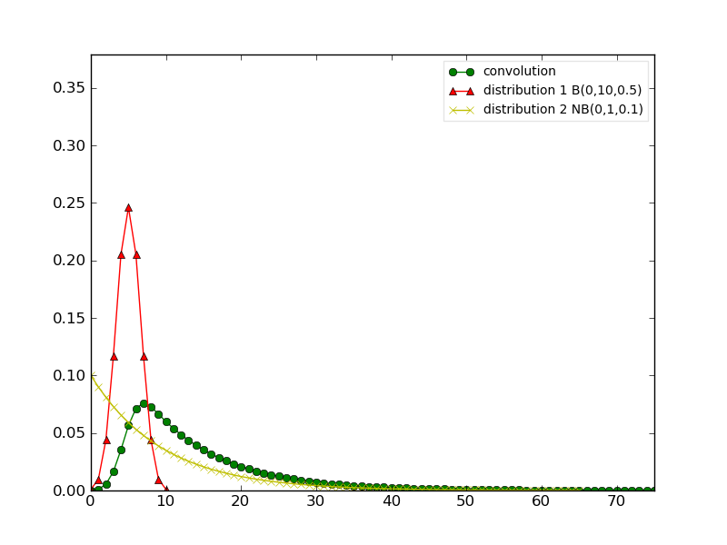
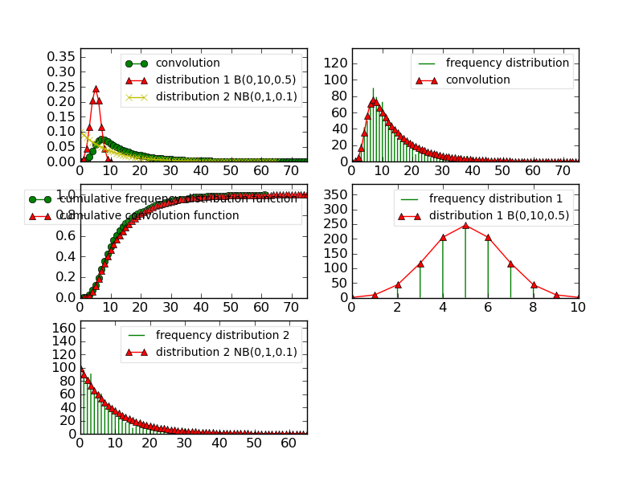

ref:Convolution
Convolution#
Here is a brief description of the Convolution type, which uses notions introduced in the histogram_tutorial section, which is recommended to look at first.
Constructor#
Similarly to the histogram case, there are two constructors for the
Convolution() class that are used as
follows:
>>> d1 = Binomial(0, 10, 0.5)
>>> d2 = NegativeBinomial(0, 1, 0.1)
>>> conv1 = Convolution(d1, d2)
and
>>> conv2 = Convolution('./test/convolution1.conv')
In the first example, which we’ll use later on, one create the convolution of
two Distribution() that are a
Binomial() and
NegativeBinomial() distributions.
The convolution as well as the original distributions are stored within the Convolution instance. We will see how to extract the original distributions later on.
In order to display the contents, or to save the data, one uses the same functions /methods as in the Histogram case.
plotting#
>>> clf()
>>> conv1.plot(show=False)
>>> savefig('doc/user/stat_tool_convolution_plot1.png')
The following figure gather the original distribution and the convolution within a single plot.
{kind=link}

It is easy to extract only the relevant distribution and to plot it. You need to use the Extract-like functions/methods:
>>> clf();
>>> d1_bis = Extract(conv1, "Elementary",1).plot(show=False)
>>> savefig('doc/user/stat_tool_convolution_plot2.png')
>>> clf();
>>> d2_bis = Extract(conv1, "Elementary",2).plot(show=False)
>>> savefig('doc/user/stat_tool_convolution_plot3.png')
>>> clf();
>>> conv1_bis = Extract(conv1, "Convolution").plot(show=False)
>>> savefig('doc/user/stat_tool_convolution_plot4.png')
{kind=link}
{kind=link}
{kind=link}
Simulate#
Once you have a Convolution, you can simulate a data set using:
>>> simulation = Simulate(conv1, 10)
and compare the resulting data with the original one. This comparison can be done visually:
>>> simulation.plot(show=False)
>>> Simulate(conv1,1000).plot(show=False) # equivalent to the line above
>>> savefig('doc/user/stat_tool_convolution_plot5.png')
{kind=link}
